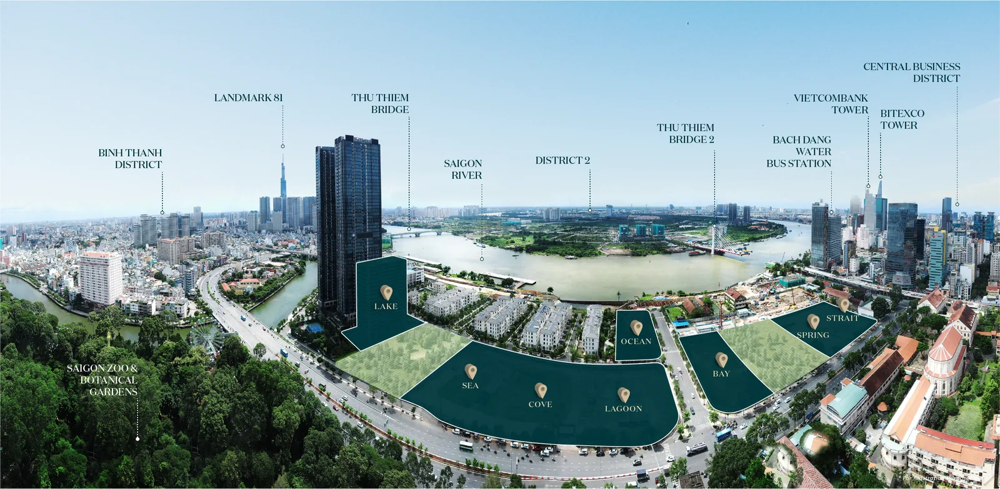

Một trong những câu hỏi đầu tiên của người mua và khách thuê là: "Từ Grand Marina đi sân bay, sang Thủ Thiêm hay vào trung tâm mất bao lâu?". Vị trí số 02 Tôn Đức Thắng, Bến Nghé, Quận 1 đặt dự án ngay nút giao của những trục đường quan trọng nhất TP.HCM. Bài viết này tập trung vào kết nối đường bộ — sân bay, hầm vượt sông, các cây cầu và những con đường huyết mạch — như một góc nhìn logistics riêng, bổ sung cho bài viết về tuyến Metro số 1.

Từ Grand Marina ra sân bay Tân Sơn Nhất mất bao lâu?
Sân bay Tân Sơn Nhất cách Grand Marina khoảng 8 km, thường mất 20–35 phút lái xe tùy thời điểm trong ngày.
Với cự ly 8 km, đây là một trong những khoảng cách ra sân bay ngắn nhất mà một dự án hạng sang ven sông ở trung tâm có thể có. Tuyến đi phổ biến là Tôn Đức Thắng → Đinh Tiên Hoàng / Nguyễn Thị Minh Khai → Nam Kỳ Khởi Nghĩa → Nguyễn Văn Trỗi → Trường Sơn, dẫn thẳng vào ga quốc nội và quốc tế.
Khung giờ cao điểm sáng (7:00–9:00) và chiều (17:00–19:00) trên trục Nam Kỳ Khởi Nghĩa – Nguyễn Văn Trỗi thường đông, nên cư dân hay chủ động đặt xe sớm hơn 10–15 phút. Ngoài khung này, thời gian thực tế thường gần mốc 20–25 phút.
Hầm Thủ Thiêm và kết nối sang khu đô thị mới
Hầm vượt sông Sài Gòn (hầm Thủ Thiêm) chỉ cách Grand Marina khoảng 2 km, cho phép sang Khu đô thị mới Thủ Thiêm trong vài phút.
Grand Marina nằm bên bờ Quận 1, đối diện Khu đô thị mới Thủ Thiêm (657 ha) qua sông. Để sang bờ Thủ Thiêm, cư dân có hai lựa chọn chính:
- Hầm Thủ Thiêm (hầm vượt sông Sài Gòn) — cách ~2 km, nối Quận 1 với đại lộ Mai Chí Thọ phía Thủ Thiêm.
- Cầu Ba Son (cầu Thủ Thiêm 2) — đã hoàn thành, bắc trực tiếp từ khu Ba Son sang Thủ Thiêm, rút ngắn đáng kể quãng đường.
Nhờ cây cầu Ba Son ngay sát dự án, việc di chuyển sang trung tâm tài chính – hành chính tương lai của Thủ Thiêm trở nên rất thuận tiện, mở ra một hướng phát triển và một nguồn khách thuê mới cho khu vực. Bạn có thể tham khảo thêm về Nên ở Ba Son, Thảo Điền hay Thủ Thiêm? So sánh vị trí để hình dung rõ hơn các khu vực này khác nhau thế nào.
Trục Tôn Đức Thắng — "xương sống" giao thông của dự án
Đường Tôn Đức Thắng chạy dọc bờ sông trước mặt dự án là trục chính nối thẳng Grand Marina với lõi trung tâm Quận 1.
Địa chỉ chính thức của dự án là Số 02 Tôn Đức Thắng — con đường ven sông kết nối liền mạch tới Bến Bạch Đằng, Nhà hát Thành phố, phố đi bộ Nguyễn Huệ và khu vực Đồng Khởi. Từ đây, mạng lưới đường một chiều của trung tâm cho phép tỏa đi mọi hướng nhanh chóng.
Một số điểm đến quen thuộc trong bán kính rất gần:
- Nhà hát Thành phố, Nguyễn Huệ, Bến Thành — trong vòng 1 km.
- Thảo Cầm Viên — trong vòng 500 m.
- Vincom Đồng Khởi ~1 km; Saigon Centre/Takashimaya ~1,2 km; Diamond Plaza ~1,3 km; chợ Bến Thành ~1,5 km.
Nghĩa là phần lớn nhu cầu hằng ngày — ăn uống, mua sắm, công sở, giải trí — đều nằm trong cự ly đi bộ hoặc vài phút lái xe, điều hiếm có với một dự án ven sông. Để xem toàn cảnh, hãy tham khảo trang Vị trí & kết nối của dự án.
Nếu bạn muốn biết chính xác từ một căn hộ cụ thể ra sân bay hay sang văn phòng của mình mất bao lâu, hãy để chúng tôi tính giúp theo lịch trình thực tế của bạn.
Bảng thời gian di chuyển tham khảo
Hầu hết các điểm đến quan trọng đều nằm trong khoảng 5–35 phút lái xe từ Grand Marina.
| Điểm đến | Khoảng cách (tham khảo) | Thời gian lái xe ước tính |
|---|---|---|
| Hầm Thủ Thiêm | ~2 km | 5–8 phút |
| Nhà hát Thành phố / Nguyễn Huệ | ~1 km | 3–5 phút |
| Chợ Bến Thành | ~1,5 km | 5–8 phút |
| Landmark 81 (Bình Thạnh) | ~4 km | 10–15 phút |
| Sân bay Tân Sơn Nhất | ~8 km | 20–35 phút |
Các con số trên chỉ mang tính tham khảo, dựa trên khoảng cách công bố và điều kiện giao thông thông thường; thời gian thực tế thay đổi theo giờ trong ngày và tình trạng đường. Đây là ước lượng chung, không phải cam kết về thời gian di chuyển.

Vì sao kết nối thuận tiện lại quan trọng với người mua để ở và đầu tư
Kết nối đường bộ tốt vừa nâng chất lượng sống hằng ngày, vừa giữ sức hấp dẫn của căn hộ với khách thuê cao cấp.
Với người ở thực, gần sân bay và trung tâm nghĩa là tiết kiệm hàng giờ mỗi tuần. Với nhà đầu tư, nhóm khách thuê mục tiêu của branded residences — chuyên gia nước ngoài, lãnh đạo doanh nghiệp, khách lưu trú dài hạn — thường đặt yếu tố "đi lại nhanh" lên rất cao khi chọn nơi ở. Một vị trí Quận 1 ven sông, gần cả sân bay lẫn khu tài chính Thủ Thiêm, là lập luận thuyết phục để duy trì nhu cầu thuê ổn định; chủ đề này được phân tích kỹ hơn trong bài Cho thuê căn hộ Ba Son: vì sao vị trí Q1 hút khách thuê.
Theo các đơn vị nghiên cứu thị trường như Knight Frank và Savills (số liệu công bố giai đoạn 2023–2024), căn hộ hàng hiệu (branded residences) thường được định giá cao hơn 25–35% so với căn hộ không thương hiệu tương đương — một phần nhờ vị trí lõi và khả năng kết nối. Đây là tham chiếu thị trường để bạn cân nhắc, không phải lời hứa về mức tăng giá; kết quả thực tế phụ thuộc vào dự án, thời điểm và chính sách.
Bối cảnh khu Ba Son và bức tranh kết nối tổng thể
Lợi thế kết nối của Grand Marina đến từ chính vị trí lịch sử của khu Ba Son — cửa ngõ ven sông của Quận 1.
Khu đất Ba Son từng là xưởng đóng tàu hơn 200 năm trước khi được quy hoạch thành một trong những khu phức hợp ven sông đắt giá nhất thành phố; câu chuyện này được kể trong bài Lịch sử Ba Son: từ xưởng tàu 200 năm đến đất vàng Q1. Vị trí cửa ngõ đó cũng chính là lý do mạng lưới đường — Tôn Đức Thắng, cầu Ba Son, hầm Thủ Thiêm — hội tụ ngay sát dự án.
Tóm lại, bức tranh kết nối của Grand Marina gồm bốn lớp bổ trợ nhau:
- Đường bộ trung tâm: trục Tôn Đức Thắng và mạng đường Quận 1.
- Vượt sông: cầu Ba Son và hầm Thủ Thiêm sang khu đô thị mới.
- Sân bay: Tân Sơn Nhất ~8 km.
- Đường sắt đô thị: ga Ba Son tuyến Metro số 1 chỉ cách ~250 m (đã vận hành).
Sự kết hợp giữa đường bộ, đường sông và metro ngay tại một địa chỉ là điều khiến vị trí này khác biệt. Nếu bạn mới tìm hiểu khái niệm căn hộ hàng hiệu, bài Branded Residences là gì? sẽ giúp bạn nắm bối cảnh trước khi đi sâu vào từng căn.
Mỗi tòa và mỗi tầng của Grand Marina có hướng nhìn và lối tiếp cận khác nhau — điều này ảnh hưởng tới cảm nhận về sự thuận tiện hằng ngày.

Ghi chú
Thông tin về giá, diện tích và tiến độ có thể thay đổi theo công bố chính thức từ chủ đầu tư. Vui lòng liên hệ Zalo 0903 475 802 để nhận tài liệu và bảng giá mới nhất.